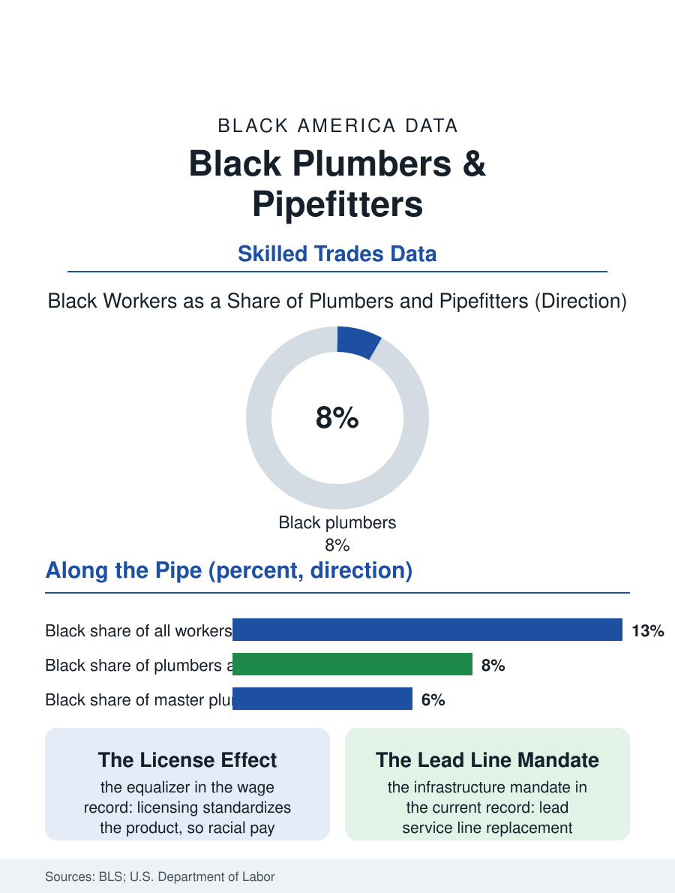

Black Employment
License to Earn: Black Plumbers and Pipefitters
Plumbers and pipefitters earn above-median wages behind a license that narrows pay gaps, yet Black workers hold under a tenth of the trade. The plumbing file.

Plumbers hold a license that prints money in a housing shortage, and like their fellow tradespeople in the electrician file, they are overwhelmingly not Black. Black workers make up roughly seven or eight of every hundred American plumbers, pipefitters, and steamfitters in the federal counts, in an occupation whose median pay sits comfortably above the national line and whose work, like the electrician's, cannot be shipped overseas or automated away. This article reads the plumbing file.
Pipes, Paths, and Gatekeepers
The route in mirrors the other licensed trades: a four-to-five-year apprenticeship, a journeyman's license, and for the ambitious, a master plumber's license that unlocks contracting. The United Association's locals train the union side of the trade, while the open-shop segment trains through contractor associations and technical colleges. Intake demographics follow the channel, as they do throughout this atlas: advertised public intakes diversify the class; referral intakes reproduce it. The plumbing file adds one wrinkle, the family firm. A large share of plumbing work flows through small shops, frequently founded by a master plumber and staffed through kinship and neighborhood, which makes the trade's ownership map and its employment map nearly the same document. Where a Black master plumber owns the shop, Black apprentices appear in its trucks; the inverse geography, whole counties with no Black-owned shop and correspondingly few Black plumbers, is the file's quiet recurring pattern. Public works long provided the counterweight: municipal water systems, public housing authorities, hospitals, and school districts employ plumbers under civil service rules, and the maintenance departments of Black Belt cities built a generation of Black tradespeople whose licenses later seeded private shops.
New Construction, Service, and the Money Split
The trade divides its money between new construction, cyclical and developer-driven, and service and repair, the recession-proof river of broken pipes and failed water heaters. Black plumbers in the workforce data concentrate more heavily in institutional maintenance and new construction, and less in the residential service segment where the trade's highest hourly billings live, a distribution with roots in the referral networks that feed service calls and the bonding and marketing capital a service fleet requires. The wage data inside the occupation nonetheless show the license doing its equalizing work: racial earnings gaps among licensed plumbers run narrower than the economy-wide gaps, because the credential standardizes the product and the shortage standardizes the bargaining power. Scarcity is the file's drumbeat. The workforce is aging, housing construction targets run ahead of the pipeline, and the water infrastructure legislation of the decade, lead service line replacement above all, specifies years of work that must be done by licensed hands, much of it in the older housing stock of the very cities where Black plumbers and Black apprentices are most numerous. Lead line replacement programs in several cities have been written with explicit local-hire and apprenticeship provisions, converting an environmental mandate into a trades pipeline in the neighborhoods the pipes poisoned.
The Shop at the End of the License
The master license is where the employment file hands off to the business file. A plumbing company is among the most financeable small businesses in America: essential demand, recurring service revenue, trucks and tools as collateral, and an owner whose license is itself the firm's core asset. Black-owned plumbing firms face the contracting file's familiar obstacles, bonding capacity, commercial insurance costs, and the working-capital gap between performing work and being paid for it, alongside the residential market's referral dynamics, where Angi-era platforms have partially leveled the field by routing customers through ratings rather than relationships. The trade's associations and the minority contractor organizations document the counter-moves: joint ventures with larger firms, supplier credit relationships, and the deliberate cultivation of property-management clients whose portfolios produce steady service volume. The plumbing file closes with the arithmetic the whole trades section of this atlas keeps returning to. The country needs more plumbers than it is training, the pay clears the national median by a wide margin, the license equalizes much of what the labor market does not, and the intake offices, shop networks, and public programs now being designed will decide whether the next generation of Black tradespeople enters at the rate the shortage invites or the rate the referral system historically allowed.
More in Black Employment
The Black Unemployment Rate: The Two-to-One Pattern
Black unemployment runs at roughly twice the White rate — 5.5 percent against 3.3 percent in annual averages — a ratio stable across five decades of federal data. How it is measured and why it persists.
Black Median Weekly Earnings: The 80-Cent Ratio
Black full-time workers earn a median of about $900 a week — roughly 80 cents for every dollar White workers earn. The BLS earnings data by group, gender, and occupation.
Black Labor Force Participation: Working at National Rates
Black labor force participation runs at roughly the national rate — and Black women participate at higher rates than White women. The BLS participation data.
Source: U.S. Bureau of Labor Statistics, Current Population Survey and Occupational Outlook Handbook; United Association and Department of Labor apprenticeship data.